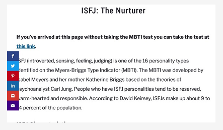

Team Profile

Team AC
①Junyi Zhang froms Team AC, student number is s3701407, student email is s3701407@student.rmit.edu.au. I was an overseas VCE student who can speak Chinese and English. Before coming to Australia, I played badminton pretty well. After experiencing the culture of Australia, I started to get in touch with skateboarding, because I often saw groups of skateboarders on the road, and the skateboarding culture slowly affected me. I also raised a very cute lop-eared rabbit and it is one year old.The richness and creativity of the IT industry has attracted me deeply. I can develop software that I can think of or design a web page that I am satisfied with, and so on. At the same time, the salary level in the IT industry is also considerable. After possessing a certain ability, as an IT staff, you can often get a good salary to support yourself and prove your value to the society. My interest in IT started three years ago. I have a friend who understands IT much better than me, so I usually talk to him about this aspect. My interest in IT is a cumulative process.
According to the online learning style test, I am a visual learner.
The result is:
As a visual learner, I can learn by reading or viewing pictures, and I can understand and remember things visually. I can imagine what I have learned in my mind and learn best by using mainly visual methods.
In a team,I think working in real life can help me complete the team work in a down-to-earth manner. I prefer to put my energy into real life. It represents I will achieve victory in life in a way that does not attract attention. At the same time, I will save more energy and concentrate on my work. So I prefer a quiet and simple life. I prefer to be a contributor and follow the assigned tasks to complete with all my strength. At the same time, I will also learn the way of leader management team.
②ZHEN YANG,a Chinese boy from Team AC who is 20 years old now.This is my first semester of bachelor of information technology.Actually,I completed English training at REW from August to December last year.My nick name is Melo, probably some people are familiar with this name,that's because I used the name of one of my idols. He is a famous NBA star named Carmelo Anthony,people like to call him Melo. I am interested in almost all mainstream sports but most of them are just limited to watching games.Even if I don not participate in some sports in reality,however,the excitement of sports games still attract me deeply.So far I am more interested in security in IT. In fact, I do not know much about the IT field, but security is an absolutely indispensable part of the IT industry. Although the security in IT is complex and difficult like the encryption and decryption of various instructions, the principles are worthy of research. Honestly,so far I have no IT experience because I just study in university.Probably the only one experience is I have design a mini application as final exam when I studied in China's university.
The result of MBTI test:
Talent analysis: your personality type tendency is " ESFP " (extroverted real feeling perception tendency: E57, S58, F61, P74, thoughtless index: 11) Outgoing, friendly and tolerant. Love life, humanity and material enjoyment.
The result of Learning style test:
Visual is your primary learning style.
Auditory is your secondary learning style.
Kinesthetic is your least preferred learning style.
The result of Big Five Personality test:
O:48% C:56% E:60% A:67% N:29%
The results of the test shows that I am a friendly, outgoing and easy to get along with. I feel that this personality can help me quickly establish friendship and cooperation with other people in the team, and I can use the learning method that suits me to play an appropriate role in team work and share experience with my teammates.In the team, I will try to work in a practical way to be responsible for our teamwork.
③I am HAOYU FENG from CHINA, a boy born in 1999 who froms Team AC. You can call me Brook. I do not have religion. I studied Computer Science and Technology at Beijing Normal University, Zhuhai campus (BNUZ) for two years from 2017 to 2019. There is the collaboration between RMIT and BNUZ so I choose to study bachelor of Information and Technology at RMIT for two years to get double bachelor degree certificate. Now I can speak Chinese and English and I hope to master Japanese in the future. Watching anime in pastime leads to my interest in Japanese. Actually, basketball is my favorite hobby. Russell Westbrook, an NBA star, is my favorite player. I am willing to try new things and enjoy communicating with people. The interesting point is that when people discuss the same thing, they often get different opinions and perspectives.I like mathematics very much and I like to solve problems with logical thinking. I feel a strong sense of accomplishment when problems are solved so I prefer IT to other majors.I joined the ACM Association before.Teachers and seniors taught me some simple algorithms and data structures which help me a lot in IT field.
The TypeFinder Personality Test: You are analytical and objective, and like bringing order to the world around you. When there are flaws in a system, you see them and enjoy the process of discovering and implementing a better way. You are assertive and enjoy taking charge; you see your role as that of leader and manager, organizing people and processes to achieve goals.
The learning style test: You are a Tactile learner! You learn by touching and doing. You understand and remember things through physical movement. You are a "hands-on" learner who prefers to touch, move, build, or draw what you learn.
The Big Five Personality Test: Openness (56%); Conscientiousness (48%); Extraversion (52%); Agreeableness (65%); Neuroticism (27%).
As for me, I will use my strengths and avoid procrastination. And what I need to do is share these results with my teammates in order for them to know more about me and to work together more effectively.In the group cooperation, I am willing to share my own opinions and pay more for the group. The online learning Style test shows that I am a tactile learner, so I should improve my work efficiency by understanding real objects.The tests show that I am a person who like rational analysis and solving problems through logical thinking, and I have a strong sense of responsibility. it is easier for me to unify the direction and make efforts for it in a team.
④My name is Zupei Min(Jack), froms Team AC. I am 20 years old who come from China, when l finished my junior middle school, l came to Melbourne. Chinese is my first language, and English is my second language. As for me, l had learnt 3 years Information Technology in my junior middle school. However, when l started my high school in Melbourne, l did not choose IT course, hence l did not have deep foundation for IT before the university.When l entering high school, l began to discover the magic of computers. School encourages us to using the laptop, l have to learn more functions to help the study. The most interesting part of computer for me, is that to design the games. Especially, when you playing a game, it can not meet your needs, or you have a good idea for the improvement of this game. Hence, to develop a game that can catering to young people taste, and can catch people eyes at the first time is my dream. Overall, although at the beginning, l did not have elementary knowledge about IT, but it is also my advantages, I will be commit to make these boring web pages, injecting cultural features, and designing a more colorful Internet, the curiosity about information technology will push me forward.
Myers-Briggs Test:

Learning Style Test:
Creativity Test:

In my opinon, the creativity for the software desgin is very necessary, only have enough creativity, then you can use your own imagination to establish your own IT world in your software. In the test, my creativity is like in the middle, hence l will improve my creativity in the next few years, to show the design concept of unique style that makes people feel fresh and curious.
⑤My name is Jianxuan Xing ,from Team AC, a RMIT student, i am a international student from china, It has been five years since I came to Melbourne in 2015. My high school in ringwood secondary college is really a place full of memories. After three years of high school life, I successfully passed the VCE exam and finally entered my dream. RMIT. I like playing basketball and computer games such as league of legend, CSGO, I also have a cute guinea pig. He is very timid, but he likes me very much.i was in RMIT last year for diploma of IT. When i was in high school, i have learned PY charm, and also going to the work shop to help teacher with his work, since that moment i feel that I have an indissoluble bond with IT，that is why i want to learn IT is i am really intrested in mobile app, database and create website.
I think IT is one of the most promising industries at the moment, because now is the era of big data, the popularisation of the Internet and mobile phones makes the current society very convenient. In summary, the IT industry is very promising. Prospects, this is one of the reasons why I choose IT.
Test Results:
http://www.educationplanner.org/students/self-assessments/learning-styles-quiz.shtml?event=results&A=9&V=8&T=3
https://www.truity.com/personality-test/17315/test-results/24661950
in the big five personality Your personality traits interact to create unique patterns of thought and behavior. In this section, you'll learn how your traits work together to drive the way you interact with the world. To describe your personality patterns, we use a circular graph called a circumplex. The circumplex is used by psychologists to illustrate how two traits intersect to create more complex patterns of thought and behavior. Each circumplex has four sections, with each section describing a typical pattern. The area of each section shows how well that pattern describes you. A larger area indicates a better fit for that pattern. Some circumplex graphs will show a clear preference for one pattern. Others will show a more even spread over two or even three patterns. Where you have nearly equal scores for two or more patterns, you can expect that both patterns may describe you equally well. The results given by these two tests prove that I am a very sensitive person who can make very precise plans. In the team, I can act as the leader of the plan and assign the plan. I can quickly realize the problem of the plan. , It is of great help to the whole team, and I also have many shortcomings in the process of learning. Education planner test results suggest me （Remember that you need to hear things, not just see things, in order to learn well.）
Ideal Job

①Junyi Zhang
First of all, working in this company can greatly improve my work ability. Secondly, the reason why this job attracts me is that the general salary of this job is 130k a year. This is also an important reason why I expect this job.
This job requires knowledge of a certain Android or iOS system, and development of mobile applications, so basic JAVA and Android studio must also be used. Currently this company is still writing native applications, the direction is iBeacons, AR and RFID technologies, I have not learned about these aspects, I believe I can learn more in the near future.

②Zhen Yang
I think that for this position is to provide IT services to financial companies, especially for maintaining the company's website and responsible for the security of the website. And to provide IT technical support to customers and service providers. What attracts me most about this position is that it is in a financial company. I hope that my job can be integrated with the financial industry. For the technical side, it requires employees to have sufficient web technologies and sufficient basic IT skills. What's more, employees need to have good communication skills when they face customers.

③Haoyu Feng
This position is about develop software. The attractive salary and collaborative culture impressed me. I think professional skills and the ability to communicate are the foundation for everyone on the team. And the corporation should reward highly skilled workers with handsome salaries. The attitude and working environment of the company towards employees is what I expect. This is the main reason why I choose it. Employees in this position are required to master a variety of computer languages such as Java and Python and be proficient in them. In addition, they need to constantly communicate with other team members to share their ideas and get new inspirations. They also need to be sensitive to product development in order to continuously optimize product performance.

④Minzu Pei
For this job, l think it will be a good choice for me. Firstly, it's a very attractive job, and I think game design is a promising and innovative job, which is in line with the spirit of young people exploration. In addition, video games are very popular all over the world, and this company game development is not only limited to computers, but also to mobile phones and 3D games. For this job, need to be proficient in computer and mobile phone operation, as well as team work, virtual engine experience. In my opinion the creativity and imagination is the most important component of game design. As for me, in my 3 years university life, in order to meet the company admission requirements, l will focus on the programming and computer systems study, and also the user centered design is also important.

⑤Xingjian Xuan
My ideal job is to create an app, be an IT engineer, Learning to make mobile phone software can exercise my logical thinking very well. In the process of making mobile phone applications, I will use SQL and other software, which is just the course I learned. I can also use user center design to make a good one. Mobile phone software can bring very high profits and accumulate a huge number of users. When I make other software, users will actively choose our software. Responsibilities: Design and develop mobile applications for iOS and Android Maintain iOS and Android codebases Manage release of mobile applications to the iOS and Android app stores.
Ideal Job

URL : https://www.seek.com.au/job/50328899?type=standard#searchRequestToken=0077c1f4-5f30-493f-9527-d09b71977782
I think that for this position is to provide IT services to financial companies, especially for maintaining the company's website and responsible for the security of the website. And to provide IT technical support to customers and service providers.What attracts me most about this position is that it is in a financial company. I hope that my job can be integrated with the financial industry.In addition,this job may allow me to have more choices about where to work and I am satisfied with its salary.
For this position, at least 3 years of relevant IT work experience is required because it has a higher income. For the technical side, it requires employees to have sufficient web technologies and sufficient basic IT skills. What's more, employees need to have good communication skills when they face customers.
So far for me, I don't have much skills in web programming and maintenance, and some basic IT skills are not well mastered. But I want to be very friendly and patient when facing others.
I am still studying for my undergraduate IT degree, and I hope to exercise my basic IT skills and learn more about information security and programming. After that, I plan to apply for a master's degree in IT to improve my IT skills more precisely. I hope I can get some job opportunities after graduation to ensure that I can accumulate a lot of experience for my ideal job.
Personal profile
The result of MBTI test:
Talent analysis: your personality type tendency is " ESFP " (extroverted real feeling perception tendency: E57, S58, F61, P74, thoughtless index: 11)
Outgoing, friendly and tolerant. Love life, humanity and material enjoyment. Like to work with others. In the work, pay attention to common sense and practicality, pay attention to the actual situation, and make the work interesting. Flexible and impromptu, naturally not artificial, easy to accept new friends and adapt to new environments. Learning new skills with others can achieve the best learning results.
The result of Learning style test:
1.Visual is your primary learning style.
2.Auditory is your secondary learning style.
3.Kinesthetic is your least preferred learning style.
The result of Big Five Personality test:
O:48% C:56% E:60% A:67% N:29%
①For the results of the MBTI test, it shows that I am a friendly, outgoing and easy to get along with. However, it also shows that I am an easily infected person, sometimes softhearted and do not know how to reject others. This is somewhat similar to me in reality, and sometimes I want to be more decisive.In terms of the result of learning style test,Visual learning is my main way of learning. I think in the future, I can use more ways of watching pictures to assist my learning.Kinesthetic learning is not my main learning method. Learning by doing will affect my learning efficiency.The results of the Big Five personality test show that my personality is suitable for helping others in daily and practical ways, and I will work hard in this aspect in the future.
②I feel that my friendly and outgoing personality can help me quickly establish friendship and cooperation with other people in the team, and I can use the learning method that suits me to play an appropriate role in team work and share experience with my teammates.In the team, I will try to work in a practical way to be responsible for our teamwork.However,Sometimes I do not know how to reject a person's requirement, which can also bring hidden dangers to teamwork. For example, sometimes I do not deny bad ideas from other people in the team.Moreover,my lack of learning by doing may also lead to mistakes in the actual operation of some teamwork.
③When forming a team, I will try my best to find people who are good at hands-on operations to make up for my shortcomings in this area. Also for me, finding creative people as teammates is also a good choice.However, in terms of personality, I expect to form a team with a group of equally friendly and outgoing people, which will create a relaxed working atmosphere.
- https://personalitymax.com/report/?ls=67-46-38&name_key=1bf4f5e431
- https://www.truity.com/personality-test/17315/test-results/24098782
Project idea
Dog communication robot
Animals are an indispensable part of natural society, for humans, dogs are a special presence in daily life. As the most loyal partner of humans, dogs can always accurately capture the various signals released by humans. In order to get along better with the dog, overcoming the communication barriers between dogs and humans is a major issue worth breaking through. For this goal, our project aims to realize the communication between intelligent robots and dogs. By shaping the dog appearance of the robot and recording the sounds of different dogs, we can understand the dog's thoughts and learn more from their habits to get along better with them as much as possible. The key technology of this project is to analyze the frequencies and sizes of sounds produced by different dogs and explore the meaning of them.
According to Sundra Chelsea Atitwa(2018), there are more than 73 million dogs and over 42.5 million households have one or more dogs in United States. This is enough to prove that a number of people love dogs and treat them as one of their life partners. Dogs could not speak, but as friends, owners look forward to communicating with their dogs. The robot dog can receive dog language and convert it into human language, so that it can achieve barrier-free communication between dogs and humans. People can fully understand the dog's thoughts and give them better care is like having a close partner in real life.
For this product, its main body is an intelligent robot. The size of this robot can be various, just like there are many breeds of dogs. The appearance of the robot needs to be processed to look like a dog and their scent bags are to be put on because the dog has a sensitive sense of smell. These are to make the dog feel that they are the same as possible. What’s more, the sound device of this robot is indispensable. Dogs communicate by barking, the sounds of robot dogs should be similar to those of real dogs. Sometimes the barking sound of a dog is loud and takes a long time. The product needs to accurately accept and recognize the dog bark, because there may be various noises in life but the robot dog only needs to accept the dog bark. The most important point for this product is to deal with the language problems of humans and dogs. First of all, the robot dog will enter the languages of different countries and allow people to adjust them according to their preferences. For dog language, it is dog barking. The robot dog needs to record samples of dog barks of different sound sizes and lengths and sort out the corresponding meanings. Developers need to obtain the meaning of different dog barks as much as possible from professional researchers and professional dog owners. This robot dog will sort out the meaning of the dog bark it hears and convert it into the corresponding meaning of human language and then send it out through a sound device. For the words spoken by humans, the robot dog will use the same principle to convert the human speech it hears into the corresponding dog barking and send it out. The robot dog moves through wheels, but its moving speed will not be as fast as the dog because it sometimes causes the robot dog to roll over. When the robot dog hears the barking, it will determine the direction of the sound and move in that direction. Once it detects a dog in its sight, it will recognize the dog's breed and store the dog's information in the memory. For owners, they are allowed to enter information about their pet dog in the robot dog, including looks, name, age, etc. This product will use biometric technology to identify different dogs, just like fingerprint unlocking and facial unlocking of human mobile phones. The looks of many dogs make people unclear, especially dogs of the same breed. The use of biometric technology will avoid inaccurate photo identification. In addition, in order to better make the robot dog accepted by dogs, the appearance of this product can be made according to the needs of different families, organizations, or individuals. However, the problem in this project is the barking recognition technology. After all, humans were not dog, their languages are not the same. Lots of unknown problems may be encountered in language conversion, which may lead to inaccurate language conversion.
This project requires an intelligent robot as the main body, which must have basic motion functions. Some other auxiliary hardware devices need to be installed on the robot. First of all, the sound receiving and sending device is indispensable, it is used for communication. Second, there must be a camera system to identify different kinds of dogs. For software, a basic information system is required to store various voice information and dog information. Moreover, an intelligent system that recognizes the meaning of sounds is the key to the entire robot. Finally, a biometric system is used to identify different kinds of dogs.
In order to complete this product, the function of realizing dog barking recognition and meaning conversion must be realized which need to be written. Moreover, the algorithm for visual tracking has to be written, which can be used to identify and track dogs. Developers also need to complete a basic system for storing dog information. The software for barking recognition and conversion is relatively difficult to implement. It needs to be combined with a sound device and finely sort out the differences between different barks. The meaning of barking is unknown, so it will face challenges to implement this algorithm.
If this project is successful, it will ideally achieve barrier-free communication between humans and dogs, which will make a huge change in human life. For people who like dogs, they will fully understand what dogs think and get along better with dogs like real friends. A number of dog attacks on humans will also be avoided in life, and lots of people will no longer have fear of dogs. For those social dog protection organizations, the number of stray dogs will drop drastically so they can spend more energy on other things. Dogs will play a different role in human life.
- Reference List
- Sundra,C.A. 2018,How Many Dogs Are There In The World? viewed 08 August 2020,